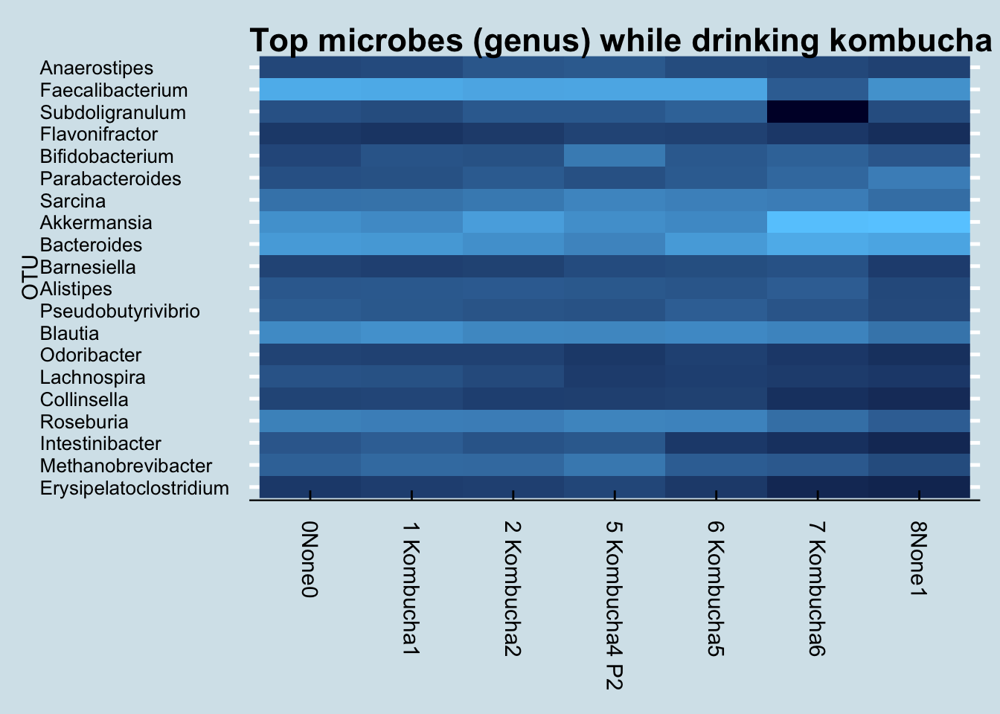

10 My Experiments
Microbe numbers shift daily in response to your environment, so a single sample won’t give much more than a brief snapshot at a single point in time. Here are some of the experiments I’ve tried on myself, in over 600 tests since 2014. What happens in your case?
10.1 Summary of My Experiments
During the period from 2014 through early 2019, I sequenced over 600 samples of my microbiome. Inspired by the experiment in a 2014 paper by David Lawrence1, during most of that time I also carefully tracked the food I ate, my sleep, and other variables like activity or location. Most of my near-daily samples were of my gut, but I also regularly tested my skin, nose, and mouth. Since I’m generally healthy, I didn’t have a specific goal in mind other than to try to understand better what these microbes are doing, so many of my tests were taken while undergoing simple experiments, like eating a specific type of food or visiting a new location. While not necessarily up to the rigorous standards of a formal scientific trial, these “n of 1” studies on myself helped me discover several new interesting facts about my own microbiome, many of which appear to contradict other published studies. In addition, hundreds of people sent me their own test results, letting me compare many different microbiomes. And of course, I also followed the latest developments in scientific publications and the general press as I eagerly tried to learn more.
What follows is a brief overview of some of the key things I learned.
- The microbiome is highly variable from day to day, often moving in ways that appear indistinguishable from random.
- Broad trends are there if you look closely. I found many intriguing new results.
- It is possible to change your microbiome in specific circumstances.
- People’s microbiomes are frustratingly different from one another. A feature that seems to be true about one person may not apply to another.
10.1.1 Diversity
The general consensus is that diversity is good: a greater variety of microbes ensures more resilience against the daily threat of invaders. Many people, after taking just one test, often feel either reassured that their diversity is “good” or disappointed that it’s “bad”. But I find that day-to-day variability is high enough that it’s almost never useful to use a single result. For example, here’s my diversity during a typical week: (Figure 10.1))
If Monday were my only test, I may have been disappointed with my 1.83 score. Wait another day or two and, with no significant changes in diet, I was up to 2.29 – before plunging to 1.78 by the weekend. Moral: don’t take a single result too seriously.
To get a sense of how much diversity can vary over a year (Figure 10.2))

10.2 Kefir and the Microbiome
Everyone interested in the microbiome eventually has to check out kefir. Google the phrase “one of the most potent probiotic foods available” and you’ll find kefir in all the top results. A recent BBC documentary that tested people after consuming different types of “gut-friendly” foods found it had by far the biggest effect. My interest piqued when, after my disappointment with kombucha, I spoke with a man who happened to mention his good luck with kefir as a solution to his many gut issues. On a doctor’s recommendation, he tried kefir for a number of years with limited success, until — frustrated with the $3/day expense of buying it at Trader Joe’s — he began making it himself at home. “What a difference!” he claimed.
Did it work for me? Yes! I found a very noticeable change in my gut microbiome — the most significant I’ve seen among my many experiments. Look at my daily levels of Leuconostoc, a prodigious synthesizer of Vitamin K known to be found in kefir. (Figure 10.3)

The blue dots in the chart are days when I drank kefir. Since I sample near-daily over the entire chart, we can see that both of these taxa suddenly appeared shortly after I began to consume kefir. I had almost none beforehand. Also note that the levels seem to dip when I skip drinking for a few days, such as during my business trips out of town in mid-March and another in early-April.
So apparently it has a big effect on the microbiome. What is this stuff anyway?
The first thing to know about kefir is the pronunciation. Say “Keh-FEAR”, with the accent on the second syllable, not “KEE-fur” or “kEH-fir”. The Russian origin of the term is a reminder of a time in the distant past when — it’s unclear exactly where or how — the first batch was prepared and then passed along, its microbial components shared from person to person until it reached today’s status as a popular drink you can buy in most grocery stores.
Making it at home brings more than just financial benefits. Commercially-purchased drinks are subject to unavoidable regulatory, shelf-life, and consistency contraints that matter for successful business, but not necessarily for nutrition. More importantly, if you believe like I do that microbes are highly-customized to our environments, making at home will ensure that the kefir is well-adapted to your own personal microbial environment. The batch that survives and thrives in your kitchen will have proven its ability to withstand whatever conditions you face there.
Making it yourself is surprisingly easy. It begins with a bundle of the component microbes, a cauliflower-shaped substance usually called the “grain” or “seed” that looks like Figure 10.4
Instruction books often tell you to be careful how you handle the grains, but I find them robust enough that I pick them up with my bare fingers. I drop them into a glass of milk left I leave sitting on the counter overnight and — voila! — twenty four hours later, the liquid has turned into kefir. Pull out the kefir grains from that glass, plop it into another, and you’re all set for tomorrow’s batch. Unlike yogurt, which requires heating and a stable temperature, kefir doesn’t appear to care how it’s handled, so long as you keep it at room temperature and can wait for twenty four hours. The reaction might vary by a few hours if the room is a bit colder or warmer, but otherwise I find it surprisingly consistent. Just set and forget.
I found that the only hard part is getting started. Once you have the grains, making more kefir is easy, but where do you get the grains in the first place? It’s supposedly possible to make them from scratch using a goat-hide bag filled with pasteurized milk and the intestinal flora of a sheep, but I haven’t tried that myself. I’m told it works so long as you shake every hour and maintain a constant temperature.
You can order some starter grains online for under $25, but for shipping purposes the manufacturers generally give them to you in a freeze-dried form that requires a week or so of preparation before the microbes are fully alive and kicking out drinkable quantities of kefir.
I got mine by asking around until I found a neighbor who had been brewing his own. Anyone who makes homemade kefir will be happy to give you some extra grains. The fermentation process causes the grains to multiply, and you will find yourself throwing them out regularly.
The grains themselves contain a combination of lactic acid bacteria (Lactobacillus, Lactococcus, Leuconostoc), acetic acid bacteria (Acetobacter), and yeast, clumped together with casein (milk proteins) and complex sugars in a type of carbohydrate molecule called kefiran. The nutritional content apparently varies depending on fermentation time and other factors, but there’s a lot of good stuff in there2 (Figure 10.5).
A rigorous microbial analysis by an Irish lab 3 shows precisely which microbes are present in kefir at various stages in the fermentation process. This chart shows the composition of ordinary pasteurized milk as it changes from before adding kefir grains (time 0 at the bottom) until 24 hours have passed (top) and the milk has been transformed into just Acetobacter, Lactobacillus, and Leuconostoc.
The uBiome test I used unfortunately can’t detect yeasts, so I don’t have an easy way to track the non-bacterial microbes in my kefir. But I can run the mixture through the same gene sequencing that I use for my other samples. I tested the kefir twice: once by simply dabbing the swab into the mixture that was waiting for me in the morning, and another swab from the same batch after removing the grain for an additional 24-hour “second ferment”. This is what I found when I sequenced the kefir from two different batches: (Table 10.1)
| Kefir1 | Kefir2 | |
|---|---|---|
| Lactococcus | 96.06 | 1.07 |
| Leuconostoc | 3.02 | 0.06 |
| Lactobacillus | 0.22 | 98.40 |
| Faecalibacterium | 0.14 | 0.01 |
| Roseburia | 0.06 | 0.00 |
These are the only taxa that met the 0.07% abundance criteria discussed previously. But even without that cutoff, the uBiome pipeline shows no Acetobacter, despite its prominence in the study shown above.
I wondered if this is simply due to the way uBiome labels the taxa that are found. Maybe the label Acetobacter just isn’t often assigned to uBiome samples. When I checked, I could find none in any of my own samples or of the hundreds of others that people have sent me. What’s more, none was reported in a large population study4 either. So apparently it just doesn’t show up often in humans, though I wonder why it wouldn’t show up in the 16S sequencing of my kefir sample.
The answer, according to the uBiome scientist I talked to, is that Acetobacter is too similar to other genera for it to be accurately distinguished with a 16S test. So if we can’t see at the genus level, let’s look at a higher level, such as phylum. Table 10.2
| Kefir1 | Kefir2 | |
|---|---|---|
| Firmicutes | 99.75 | 99.57 |
| Bacteroidetes | 0.12 | 0.06 |
| Proteobacteria | 0.09 | 0.36 |
| Actinobacteria | 0.03 | 0.01 |
| Verrucomicrobia | 0.01 | 0.00 |
Because Acetobacter is within Phylum Proteobacteria and Order Rhodospirillales, we would expect to see some of those microbes if any of it were present. Looks like my kefir doesn’t include anything remotely resembling Acetobacter.
That’s what’s in the kefir grain itself. How does regular drinking affect my gut microbiome?
To find any taxa that may have suddenly changed as a result of kefir-drinking, let’s look at a heatplot that shows the relative abundances of all my top microbes over time. Darker spots are days when I have less of a particular bacterium, lighter spots are days when I have more.
Note the sudden appearance of the genus Fusicatenibacter. You rarely see such a dramatic and consistent change as a result of an experiment, but unfortunately, little is known about this genus. A member of the Clostria class of phylum Firmicutes, an internet search reveals little of interest. But it definitely appears in my samples after drinking kefir.
In fact, look how the levels appear to coincide precisely with the periods when I drink kefir:
This is especially interesting because the only previous date when my gut saw any of this taxa was in December – on another occasion when I drank some kefir. In fact, Fusicatenibacter is such a strong predictor of kefir drinking that I can use it as a way to look back in time to see the samples when I drank some.
How common is Fusicatenibacter in gut microbiomes? Here’s a density plot look at a few hundred samples collected from other people.
Although most people have none, it’s not unusual for people to have a few percentage points of Fusicatenibacter regardless of whether they regularly drink kefir.
But other than this clear change in my gut microbiome, did I notice any differences in health?
Here the answer is more ambiguous. As a healthy adult, I don’t have any particular “problems” I’m trying to solve. I remained healthy during the period of the experiment, so the kefir certainly doesn’t appear to have made anything worse. My sleep hasn’t substantially changed either, and although I’m generally pretty even-tempered, I didn’t notice any particular changes positive or negative in my mood either.
The one area where, subjectively, where I feel different is in my overall sense of energy. Although I can’t put my finger on anything quantitative, I do notice that I seem to be a little more energetic on days when I drink kefir. Measuring that more precisely may be a good followup test.
10.3 Kombucha
For healthy bacteria-rich drinks that affect the microbiome, many people immediately think of kombucha. Served chilled during the summer, it has a well-deserved reputation as a natural refreshing alternative to soft drinks. Despite its tangy, mildly sweet taste, it has a surprisingly low amount of sugar: only six grams in a serving5, compared to more than 20 grams in the same amount of orange juice or 39 grams in a can of Coke.
The sugar is missing because it’s been eaten by microbes, a complex blend of bacteria and yeast that convert regular tea (usually black, but also oolong or green tea) into a complex, flavorful beverage. The fermentation process is ideal for adding other ingredients for taste, so there is no end to the interesting flavors possible, giving rise to a highly competitive commercial market: U.S. supermarkets sold $180 Million of the drinks in 2015.
Kombucha fermentation begins with a SCOBY, a “Symbiotic Colony of Bacteria and Yeast”, a pancake-sized disk-shaped gelitintous object also known as a “mother” or “mushroom”, which it sort of resembles. Despite the nickname, the only funji in the SCOBY are yeasts, combined with a complex blend of bacteria and other single-celled microbes from many parts of the tree of life. The different microbes need one another to produce the distinctive sweet and fizzy taste. Yeast cells convert sucrose into fructose and glucose and produce ethanol; the bacteria convert glucose into gluconic acid and fructose into acetic acid; caffeine from the tea stimulates the entire reaction, especially the production of cellulose by special strains of bacteria.6
There have been many anecdotal claims of the effect of kombucha on health, purporting benefits ranging from better eyesight and thicker hair to cures for various diseases, though not everyone thinks it’s healthy. Even some alternative health experts, like Dr. Andrew Weil, recommend against it. Many of the claims for and against kombucha have been studied experimentally, in mice as well as humans, often with compelling results, but I’m unable to find any good data showing how it affects the microbiome.
So I tested it myself.
For seven days, from July 27 to August 2, I drank 48 ounces per day of commercially-purchased GT’s Gingerade Kombucha. That’s three full bottles, or six servings a day for a week.
The key bacteria in the SCOBY are from phylum Proteobacteria and order Rhodospirillales of acetic- and gluconic-acid producting microbes that include genus Gluconacetobacter, closely related to Acetobacter, the key to the fermentation of vinegar. Thanks to the action of these microbes, kombucha is quite acidic, between 2.5 and 3.5 pH, almost as acidic as the 1.5 or 2.5 of a healthy stomach. These bacteria apparently don’t survive ingestion. They are rarely, if ever, found in human guts7, so whatever effect, if any, they have on the microbiome is indirect.
The label claims each bottle contains one billion organisms of two microbial species. The first, Saccharomyces boulardii, is a popular “healthy” microbe, well-studied and proven as a safe digestion aid. A close cousin of brewer’s yeast, its cell wall tends to stick to pathogens, which may account for its proven ability to prevent and fight diarrhea.8. Unfortunately, it is not a bacterium, and so won’t be detectable in my 16S-based microbiome tests.
The other added species Bacillus coagulans is often found in human guts, and should be easy to find. The specific one used in GT’s drinks is the patented Bacillus coagulans GBI-30, 6086, a particularly hardy spore-forming microbe that can survive boiling and baking. Because it’s well-studied and safe, it’s a popular “probiotic” food additive and appears to have some beneficial effects on digestion.9
I tested my gut microbiome each day, as well as my mouth and skin microbiome at intervals during the experiment and sure enough, the Bacillus shows up loud and clear. (Figure 10.8)
It took a few days of heavy kombucha drinking, but eventually those microbes became detectable. Given the known hardiness of Bacillus, this isn’t necessarily all that surprising. Still, it’s a nice confirmation that the test works; after all, in my hundreds of daily tests, I see this microbe only in the few days after drinking this brand of kombucha. But maybe the Bacillus just comes in and out, safely protected as a spore, without really influencing my microbiome. Can we see evidence the kombucha affected something else about my microbiome?
Diversity doesn’t seem to change (Figure 10.9). I looked at the overall mixture of microbes and abundances using the Shannon diversity metric, commonly used by ecologists to tell measure the richness and variety in an environment. Don’t let the scale of this graph fool you: I set it narrowly to see precisely how diversity changes each day. A Shannon diversity change of a tenth of a point or so, as in this graph, is pretty trivial.
Diversity had been climbing before the experiment began, so I don’t think we can lay that initial increase on kombucha. Incidentally, had I not been testing daily, I might be tempted to say diversity decreased. This is something that makes me skeptical of the results of many scientific studies: the microbiome flucutates so much day-to-day that what you see is very dependent on when you test. (By the way, note that the July 30 sample is missing, due to a failure in the lab processing.)
Let’s look at that order Rhodospirillales that contains the genus Acetobacter found in the SCOBY. (Figure 10.10)
If we squint enough, we might credit that large spike with kombucha drinking. It’s possible, but then how would you explain the crash the following day, or the other apparent spikes in other parts of the chart? I conclude it’s probably a coincidence. More than likely, microbes like this from the SCOBY itself are not in the beverage anyway.
What about other microbes? Here is a heatmap showing the changes of the top 20 genus during my experiment:

I don’t see any patterns. Usually, if the experiment causes a change, I’ll see an obvious streak from left to right somewhere in the heatmap, but I don’t see that.
Finally, let’s look at the levels of a few “probiotic” microbes, including the one listed on the label (Figure 10.12)
While Akkermansia seems to rise near the end of the sequence, it’s hard to see any real patterns here.
For comparison, let’s look at a longer time horizon (Figure 10.13)
Although we can’t positively credit kombucha for that spike in Bacillus during my experiment, it’s interesting that I had none of it in the weeks beforehand, and that it disappeared again in the weeks afterwards. I drink this brand of kombucha occasionally, and yes the same microbe shows up occasionally too, sometimes a few days afterwards.
In my years of testing, I rarely see Bacillus in my gut microbiome, but the few times when it does appear, there seems to be a relationship to drinking the same brand of kombucha a few days beforehand. There are also times when I drink kombucha and don’t detect this microbe, so the association isn’t perfect, but then again this was the only time I had so much of this brand all at once.
My conclusion: when consumed in large amounts, GT’s Gingerade Kombucha leaves new Bacillus microbes in my gut. Although they don’t appear to stick around permanently, the association is strong enough that I bet it works in you too. Other microbes, including so-called “probiotic” ones, don’t change much at all.
But don’t take my word for it. The full dataset and analysis tools are on Github: https://github.com/richardsprague/kombucha
There is much more analysis that can be done with this data. Some of the ideas you might try are:
- Study correlations among the taxa. Which ones are correlated, and which are not?
- Which taxa appeared and/or disappeared during the experiment?
- Is there a relationship between the microbes known to be present in kombucha and those in any of the gut results?
- How do these results compare to you when you drink kombucha?
Please study as much as you like, and let me know what you find!
P.S. The term “kombucha” is an unfortunate mistranslation of a Japanese word （昆布茶） that means “seaweed tea”. A fermented version of seaweed tea exists, but it has nothing to do with the drink described here.
10.4 Conclusions
Are these results are meaningful enough to be worthy of further analysis? How representative were these samples of my microbiome at the time? I submit only a tiny swab to uBiome’s lab; are the bacteria distributed evenly enough that the size or location of the sample doesn’t matter? Would I get similar results if I submitted two tests from slightly different sites on the same sample?
The answers to all these questions are unclear, but while we need to take these concerns seriously, my experience over many samples is that the uBiome results are consistent enough that, yes, the conclusions are actionable as long as we keep the limitations in mind. Here’s why I think so:
First, my results are consistent with other “healthy omnivore” submissions that uBiome has received from others with diets and health histories similar to mine. I would be concerned if, for example, my firmicutes/bacteroidetes ratio were reversed.
Second, 16S technology has proven accuracy when identifying unique organisms, so I can generally trust information about the overall level of diversity regardless of specific proportions. Since diversity tends to correlate with health – and is manipulable based on what I eat – my own experience shows that the changes I see in these results go up and down consistently in the expected way. Even if specific points on my microbiome map are fuzzy, the overall landmarks appear to be solid.
Otles and Otles (2003) http://files.cienciapatodos.webnode.pt/200000022-79ffe7af9e/Kefir.pdf↩︎
Walsh et al. (2016). Also a 2-minute Youtube presentation↩︎
Though one large test by the BevNet industry trade site says the labels may under-report the real amount,and in 2017 a judge approved a settlement to a class action claiming misleading sugar content by one manufacturer↩︎
The best scientific review I know is in Dufresne and Farnworth (2000)↩︎
For a list of microbes that are found in the gut, see: http://www.raeslab.org/companion/vlaams-darmflora-project.html↩︎
https://www.ncbi.nlm.nih.gov/pmc/articles/PMC4542552/↩︎
https://www.asm.org/index.php/general-science-blog/item/6761-bottoms-up-discover-the-microbes-in-probiotic-drinks ↩︎